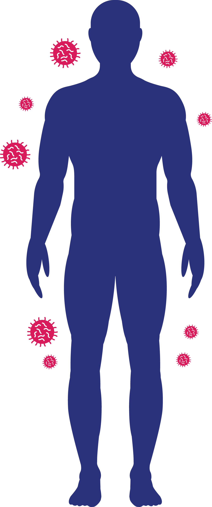

Bagaimana Virus Corona menyebar?

Penularan dari manusia ke manusia lewat droplet (partikel air liur) ketika penderita bersin atau batuk.


Dalam kasus COVID-19, diduga ditularkan dari ular dan kelelawar.